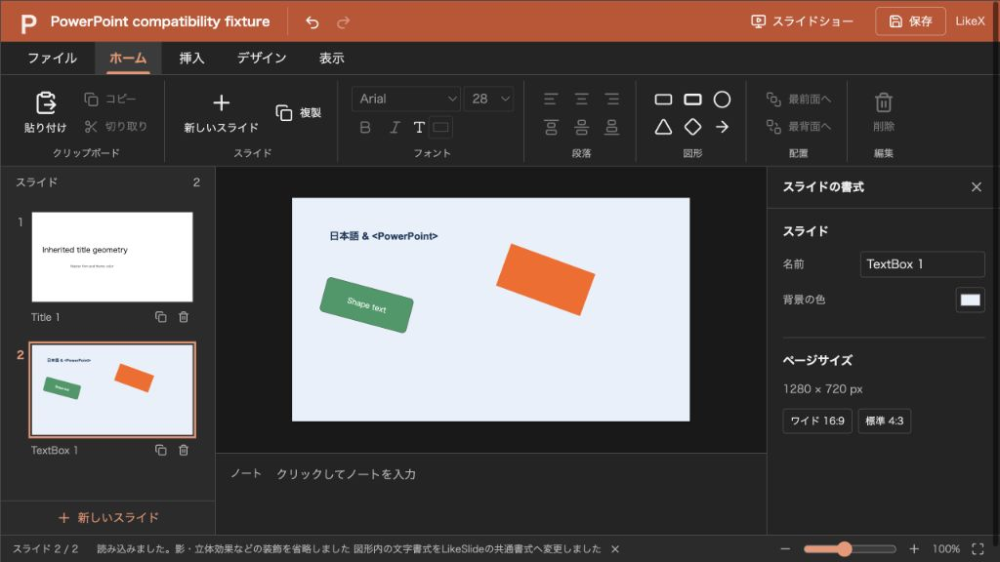

@likex/slide
PowerPoint・JSONの入出力
PPTXの読み込みと出力、対応内容と制約。
画面例を見る ↓ファイルタブにPowerPoint（.pptx）とLikeSlide（.slon）の読み込み・出力をまとめています。.slon の中身は保存用の SlideFile（version 1）のJSONです。ネイティブ形式の仕様も参照してください。古い .ppt、マクロを含む形式、暗号化されたファイルには対応しません。
APIから使う#
import { importSlidePptx, exportSlidePptx } from "@likex/slide";
const { deck, warnings } = await importSlidePptx(file);
// warningsを利用側の通知へ表示できます。
const output: Blob = await exportSlidePptx(deck);importSlidePptx の入力は Blob | ArrayBuffer | Uint8Array、第2引数は { signal?: AbortSignal } です。戻り値は Promise<{ deck: SlideDeck; warnings: string[] }> です。不正な構造や上限を超えるデータは例外にし、対応しない表現の主な省略・簡略化は warnings に返します。
この関数自体はJSONを返すだけで、エディターの下書きや保存先を変更しません。ファイルタブ経由では読み込みに成功した結果を下書きへ反映します。読み込みや出力だけで onSave は呼ばれません。
exportSlidePptx(deck) はPPTXの Blob を返します。親側でダウンロード、サーバー送信、Blob / S3への保存に使えます。
<LikeSlide initialDeck={deck} onSave={async current => {
const pptx = await exportSlidePptx(current);
const response = await fetch("/api/deck.pptx", { method: "PUT", body: pptx });
if (!response.ok) throw new Error("保存できませんでした");
}} />対応範囲#
| 内容 | 扱い |
|---|---|
| スライドの順序・サイズ・単色背景 | JSONに取り込み、出力。寸法は96dpi相当のピクセルに変換 |
| テキスト | 内容・改行、共通のフォント・サイズ・色・太字・斜体、左右中央揃え、上下中央配置を取り込み、出力 |
| 基本図形 | 長方形・角丸長方形・楕円・三角形・ひし形・右矢印・直線。位置・サイズ・回転、単色の塗りと線、線幅、図形内の文字を保持 |
| 埋め込み画像 | PNG・JPEG・GIF・WebPをJSONへ埋め込み。配置枠・回転・不透明度・代替テキストを保持し、出力時も画像を埋め込み |
| 発表者ノート | 本文をテキストとして保持し、ノートとして出力 |
| レイアウト・マスター・テーマ | プレースホルダーの位置と基本書式、テーマの色・フォントを継承。対応する背景図形も各スライドの要素へ取り込み |
文字の一部分ごとの書式は共通書式へまとめます。箇条書き・段落間隔・縦書き、図形内の細かな文字書式、図形の調整値、破線や線端の装飾は簡略化します。未対応の図形・自由曲線は長方形へ変換します。画像のトリミングは解除して元画像を元の配置枠へ入れ、反転は省略します。SVG・EMF・WMFなどの画像は取り込みません。
グループは内側の要素も含めて省略します。表・グラフ・SmartArt・音声・動画・埋め込みファイル、アニメーション・画面切り替え、影・立体効果なども保持しません。非表示のオブジェクトは省略し、非表示のスライドは表示状態で取り込みます。
マスター・レイアウト・テーマを共有設定として編集・保存するモデルではありません。読み込み時に各スライドへ反映し、出力時は共通のマスター・空のレイアウト・テーマを新しく作ります。ノートの装飾や元のテンプレート構造は復元しません。
warnings は主な省略・簡略化の通知であり、完全な互換性の判定ではありません。文字枠の余白・自動調整・改行位置や、フォント・画像の表示はPowerPointのバージョンや表示先環境でも変わります。元のPPTXを再現できる情報をすべて保持するわけではないため、必要なら元ファイルを親側で別に保管してください。
読み込みの上限#
| 対象 | 上限 |
|---|---|
| 入力ファイル | 32 MiB |
| ZIP内の項目数 | 4,096 |
| ZIPの展開量 | 1項目16 MiB、合計64 MiB |
| XML | 1ファイル16 MiB、深さ64、ノード数600,000 |
| スライド数 | 500 |
| オブジェクト数 | 1スライド1,000、全体10,000。継承した要素も対象 |
| テキスト | 本文・ノートはそれぞれ100,000文字、名前などを含む全体で2,000,000文字。タイトルや名前には別途1,000文字の上限 |
| 画像 | 1枚10 MiB、全体50 MiB。縦横それぞれ16,384ピクセル以内、40,000,000画素以内 |
MiBは1,048,576バイトです。同じ画像を複数配置した場合も、JSONモデルの画像合計には配置数分を数えます。ZIPの上限とモデルの上限はそれぞれ適用します。出力したPPTXも、再読込には入力ファイルの上限が適用されます。
外部リンクや外部画像を取得する通信は行いません。ZIP内の全項目の展開量・CRC・パスを検証し、暗号化ZIP・ZIP64・重複した項目や不正な参照を拒否します。XMLのDTD・外部実体を拒否し、埋め込み画像の形式・ヘッダー・寸法も検証します。
画面例
{kind=link}
